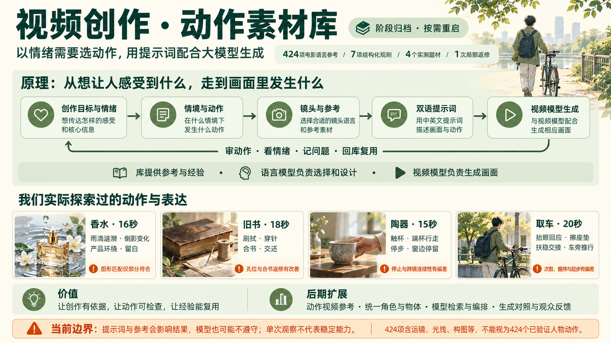
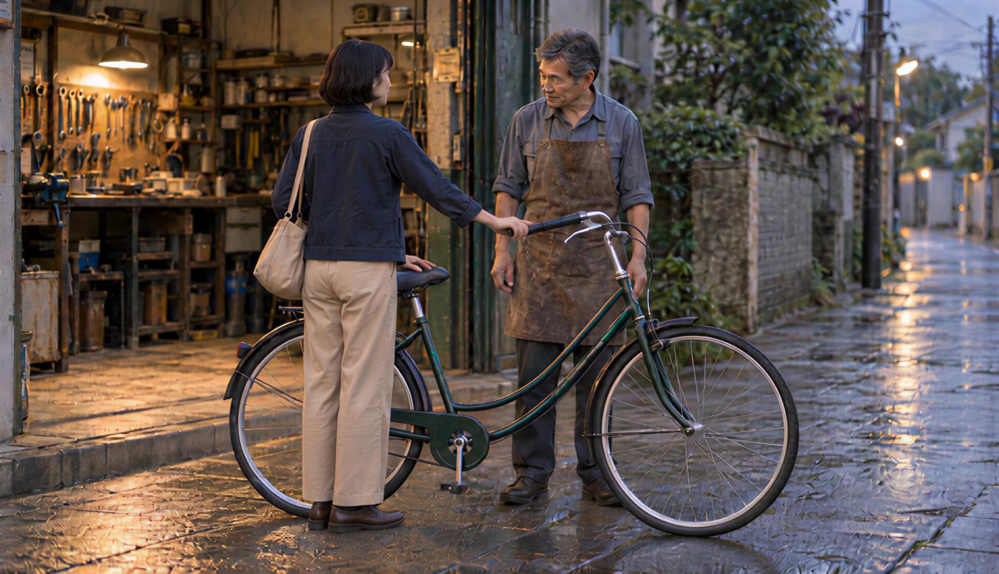
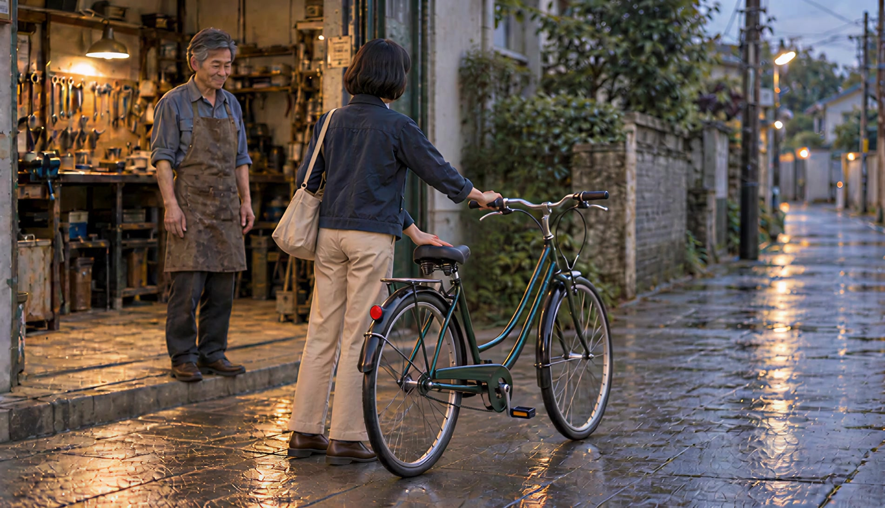
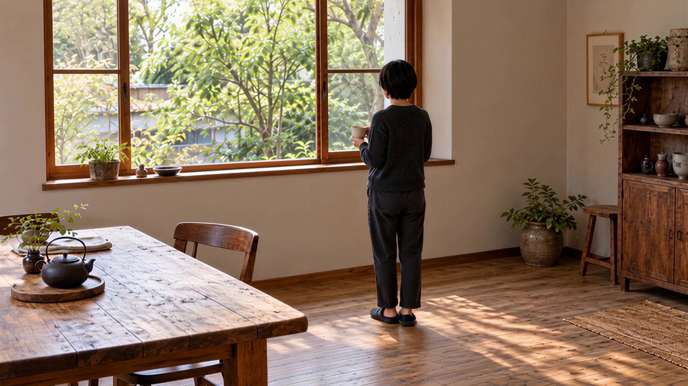
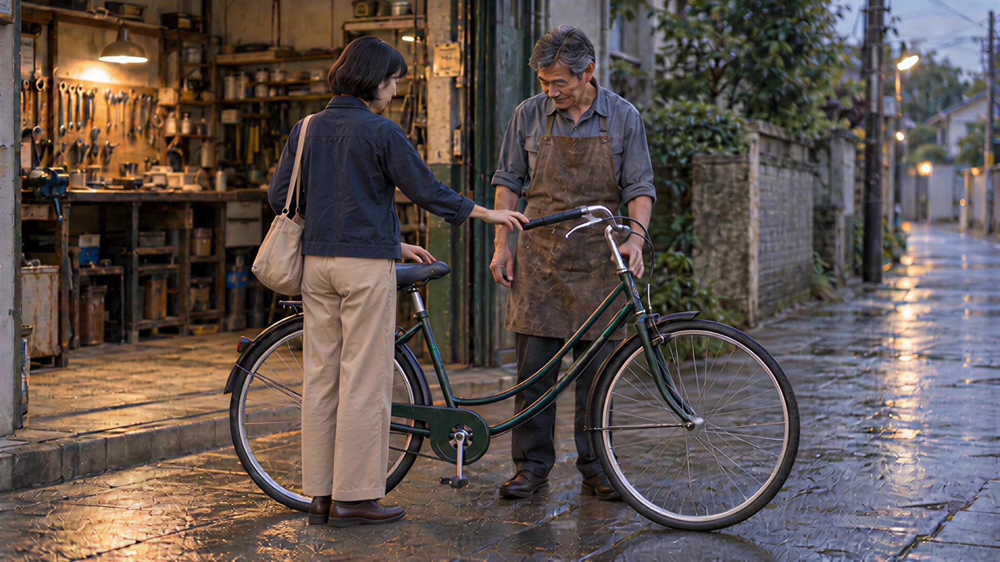

能力与实际效果
- 直观看效果：424项电影语言参考含250个原站视频、174张原站图片，逐项中英文提示词对照与复制。
- 辅助设计：从情绪需要设计情境、动作和回应，由当前助手选择参考、设计分镜，网页导入并整理双语提示词。
- 对照复盘：4个实测题材、1次两镜局部返修和16项动作／表达观察，保留实际输入、原片、偏差与未验证项。
创作的动作素材与电影语言参考库。
模型根据目标选择参考、设计动作和提示词，视频生成后再复核、沉淀经验。

从动态示例挑选运镜、光线和视觉风格。
了解技巧原理、叙事作用和容易混淆的效果。
替换主体与场景，带到你的 AI 视频工具。
以情绪需要和动作事件为核心，将电影语言参考、双语提示词、实际视频和失败经验交给模型选择、设计与复用。
用户认为现阶段研究已经够用，暂时归档，后期按具体创作需求重启。保留网页、素材、准确输入和全部历史，不继续扩库或生成视频。
424项包含运镜、构图、光线、风格等电影技巧，不能视为424个已验证人物动作。这里的动作素材包括人物操作、物体变化和镜头表达；四个题材及一次局部返修是有限实测，不代表稳定成功率。
用起态、作用点、接触／支撑、连接轴、方向和终态描述动作，形成逐镜检查清单。
已有字段与审片方法，自动物理判断尚未实现。统一技巧与案例ID、双语字段、轻量索引、完整记录、来源和经验关联，导出JSON供模型读取。
已有资料与导出；语义检索、RAG或MCP服务需另行接入。以创作方向、情境与动作、镜头表达三层组织方案；支持创作包复制、分镜导入、引用与字段校验。
模型负责创作判断，结构校验不能证明画面、物理或情绪正确。分开保存设计稿、准确实际输入与译文、参考哈希、任务结果、原片、剪辑范围、证据帧与候选改法。
可以复核一次执行，尚不能给出重复成功率或确定单一原因。从穿针孔位、合书轴、持杯停步、扶车交接等案例归纳接触、次数、持时和跨镜状态检查。
目前依赖助手审片，声音听评、观众测试和自动检测仍待补充。围绕安心、关怀、信任等感受设计具体照料、交接与回应，形成可选镜和可复盘的方案。
复用产品呈现、操作动作和结构检查，服务产品说明、手工过程与教学示意；准确工艺需专业复核。
围绕人物关系和情绪变化设计触碰、等待、移动、停留与交还，检查事件、动作和跨镜连续性。
接入语义检索与模型编排，让模型按目标读取相关案例，输出分镜、提示词及检查计划，并将新执行反馈回库。
提供技巧原例、动作与状态参考、双语输入、实际效果、问题及复用边界。
理解目标与情绪，比较方向，设计情境和动作，选择参考并写分镜、提示词。
结合实际提交的提示词和参考生成画面，输出仍需核查。
展示资料、复制创作包、导入分镜、检查结构和保存本机反馈草稿；目前没有在线文本模型自动推理。
已写明而未落实的约束属于本次执行偏差；输入素材与设计也有问题。当前没有证据给两者分配责任百分比，不能保证改提示词或换模型就会解决。
已观察：取车第三镜座垫较薄，第四镜较厚且有明显弹簧支撑；差异在两镜静态参考里已经存在，实际视频也呈现这种差异。
归因边界：参考制作与跨镜验收问题明确存在；不能全部归因于视频模型。
重启后：重启时先统一角色、物体结构和场景，再通过受控视角变化制作逐镜参考。
已观察：取车输入要求只擦一次、约0.5秒后起步、持续接触；实际重复擦拭、约2.5秒才起步，后段左手支撑不持续清楚。陶器也出现停人未停镜、下一镜重新迈步。
归因边界：本次输出的指令遵循和连续性偏差可确认；不能凭单次输出断定模型永久做不到，也不能确定各因素占比。
重启后：固定输入后做小样复测；只改变一个因素，再考虑不同参考模式或模型对照。
已观察：交接一镜要求双人、多处手部接触、支撑转移、人物回应与精确时序；实际只提供普通姿态参考，没有连续动作示范。
归因边界：任务过密、构图遮挡与参考方式可能增加难度；没有对照实验，不能认定长提示词就是唯一原因。
重启后：先拆成一个主要动作，明确起态、作用点、接触、握稳、承重、释放和终态；必要时再验证动作视频参考。
已观察：取车者开场已经较平静；照料事件可读，但疲惫到安心的反差弱。陶器有安静氛围，但主动留片刻的行动未完整落实。
归因边界：创作设计和表演起点需要改进；暖色、慢镜头与动作顺序不保证观众产生目标感受。
重启后：需要转折时先定义可见起点、触发事件和回应，再采集观看者自己的描述。
已观察：此前“动作基本可读”主要指能辨认动作顺序，没有充分覆盖自行车跨镜结构、自然握持及整片可信度。旧书首版也出现孔位与合书轴的明确逻辑错误。
归因边界：助手的制作和验收有责任，不能把全部问题转移给模型；结构校验与测试通过也不能代替内容审片。
重启后：分别检查身份与结构、动作物理关系、时序连续性、镜头要求、情绪依据和声音，再决定是否入库为可复用结果。

座垫较薄；看得到手部接触，不等于完整承重过程已验证。
对照当时静态参考 ↗
座垫更厚、弹簧支撑明显；对应静态参考里已有差异。
对照当时静态参考 ↗后续复核补充：此前“基本可读”主要指动作顺序能够辨认，不等于物体结构、自然握持和整片可信度已经合格。助手的参考制作与验收也有责任。原设计与首版历史均保留。
以下是动作和表达的观察条目，不是独立实验数，也不是稳定能力认证。旧书两镜返修仍属于同一题材。
雨滴触水与涟漪扩散 · 倒影变化与轮廓呼应 · 产品环绕与背景变化 · 产品静置与构图留白
四镜叙事已经生成并剪成成片，产品环绕、森林意象和结尾留白可见。水纹机位与跨镜头圆形匹配只部分符合设计，精确角度和观众情绪反应未验证。刷拭书面 · 穿针与孔位对齐 · 绕书脊合书 · 推送与双手交还旧书
已只重做穿针与合书并剪回 18 秒：穿针从叠书／纸页外侧落点改为单一书体的中央折缝孔；合书从另一边翻起改为沿左侧长书脊放下同一前封面。刷拭和交还沿用首版素材与取材范围。穿针只展示小幅插入，未展示下侧出针与完整拉线。
手指靠近并接触杯把 · 端杯行走 · 停步与镜头停止 · 窗边停留与后拉
15秒成片已完成：触杯接触和端杯停步可读；后拉时人物又走，且后两镜未按计划停镜。日常安静的视觉线索较充分，但“主动留出片刻”只部分表达，未做观众验证。
抬眼回应与等待 · 擦干座垫 · 扶稳交接与松手 · 在车旁推行
四镜已生成并剪成20秒：注意来人、擦拭座垫、接触后松手与推车离开都可读。擦拭变成多次往返，末镜约2.5秒才起步且后段左手未持续清楚扶座垫。细致友善的照料线索较充分，但从疲惫到安心的明显转折较弱，尚无观众验证。| 探索内容 | 实际观察与边界 | 案例及原镜头 |
|---|---|---|
| 雨滴触水与涟漪扩散物体变化 | 部分符合 雨滴与水纹可见；机位偏斜，未达到严格垂直俯拍。 | 把森林，带回城市 ↗s1 |
| 倒影变化与轮廓呼应物体变化／转场表达 | 部分符合 瓶盖与水纹有轮廓呼应；未达到精确图形匹配，反射物理未验证。 | 把森林，带回城市 ↗s2 / s3 |
| 产品环绕与背景变化镜头表达 | 可见，精度未量测 背景和玻璃倒影变化、瓶型较稳定；实际环绕角度未量测。 | 把森林，带回城市 ↗s3 |
| 产品静置与构图留白镜头表达 | 可见，精度未量测 左侧产品与右侧留白可见；比例未量测，中文来自后期排字。 | 把森林，带回城市 ↗s4 |
| 刷拭书面人物操作 | 部分符合 手持小刷反复刷拭可见；没有严格按一次刷过磨损书脊执行，微距尺度不足。 | 让故事，继续 ↗book-1 |
| 穿针与孔位对齐人物操作 | 局部返修有改善 首版孔位与书体逻辑错误；返修的中央折缝孔位和单一书体改善。下侧出针、完整拉线未展示。 | 让故事，继续 ↗book-2 + book-repair-r2 |
| 绕书脊合书人物操作 | 局部返修有改善 首版开合轴关系不一致；返修的小角度合书方向改善，不代表完全展开也能正确闭合。 | 让故事，继续 ↗book-3 + book-repair-r2 |
| 推送与双手交还旧书人物交互 | 交还关系可读 通过袖口区分角色，交还和共同接住可读；指定文案留白没有实现。 | 让故事，继续 ↗book-4 |
| 手指靠近并接触杯把人物操作 | 接触可读 接触过程可读；微距尺度、光线与原计划有偏差，手指局部几何未逐帧验证。 | 把片刻，留给自己 ↗tea-1 |
| 端杯行走人物移动 | 部分符合 持杯走向窗边可读，实际不止两步，不能声称精确步数通过。 | 把片刻，留给自己 ↗tea-2 |
| 停步与镜头停止人物／相机状态 | 停止要求未完全落实 人物停下，摄影机仍推进；主体停止与相机停止需分别验收。 | 把片刻，留给自己 ↗tea-2 |
| 窗边停留与后拉人物／镜头表达 | 连续性有偏差 景别扩展可见，但人物又走步，破坏上一镜已停住的状态，后拉也未按计划停下。 | 把片刻，留给自己 ↗tea-3 |
| 抬眼回应与等待人物交互 | 回应可读，转折弱 修车人注意来人可读；开场疲惫状态不明确，回应时间与计划有偏差。 | 有人，帮你一把 ↗bike-1 |
| 擦干座垫人物操作 | 次数偏差 擦拭位置与支撑可读；只擦一次的要求变成多次往返。 | 有人，帮你一把 ↗bike-2 |
| 扶稳交接与松手人物交互 | 接触顺序可读 先接触再松手基本可读；握稳与承重程度未完全明确，不能认定严格物理正确。 | 有人，帮你一把 ↗bike-3 |
| 在车旁推行人物／物体移动 | 部分符合 在车旁行走可读；起步偏晚，后段左手接触不持续清楚；轮速与位移未量测。 | 有人，帮你一把 ↗bike-4 |
补充真实运动路径与接触过程，按对象、作用点、起止状态检索。
逐镜参考从一致资产出发，增加结构和状态连续性核对。
围绕情绪目标检索合适案例，自动组合创作包并生成可审查分镜。
固定输入做重复和单因素对照，分开记录执行表现、声音听评与观众感受。
模型做判断 · 424 项参考 · 实测案例
输入目标，当前助手先比较创作方向，再设计让感受成立的情境与动作，最后选参考、设计分镜和双语提示词。导入后，每一步的选择和理由都能展开查看。
模型按目标取舍；这些单次结果包含成功部分和偏差，不是固定的“情绪—技巧”配方。
创作包带当前目标、424 项轻量索引、案例经验摘要与输出结构。复制到当前对话，让助手读取相关完整记录，比较方向、设计情境、解释参考取舍，再返回分镜。
此页不调用在线模型。助手负责创作与双语设计；网页检查结构并整理展示。完整资料：能力记录 · 案例经验。
已制作示例 ·《把片刻，留给自己》
保留原设计、三张静态参考、15 秒实际视频与独立复盘。
输入目标并复制任务给助手，导入返回稿后查看。也可以载入上方设计示例。
动作关系、表达线索和你的感受分别记录。草稿保存在本机，可下载交给助手核对原片与执行记录后入库；不会自动新增已验证案例。
7 项规则做基础 · 当前助手做创作 · 网页整理双语提示词
先描述要讲的故事，选择有用的技巧，再把创作包交给当前对话里的助手。把助手返回的分镜 JSON 导入这里，就能检查结构并得到逐镜提示词。
下载 7 项规则与来源 ↗先按关键词筛选，再手动取舍；这一步没有调用模型。“避免出现”只用于提醒排除，不计入正向匹配。简单筛选不理解所有否定语义，请核对。
点击复制后，粘贴到当前对话，请助手按创作包返回分镜 JSON。模型负责故事、取舍、理由与双语设计；网页负责结构校验和提示词拼装。
输入新题材时不会自动套用旧书分镜。规则不够用时，可不选任何规则，并在创作包中说明需要扩展的能力。
简报、引用规则、参数与时长必须一致。校验通过不代表故事、物理和视频效果已经验证。
先复制创作包并请助手设计，再导入返回稿；也可以载入上方旧书示例，查看完整流程。
本次模型原创设计示例 · 分镜与提示词已完成 · 成片待生成验证
记录目标、选择、效果与问题；观察和候选改法分别标注。
先按创作目标检索技巧和案例索引，再读取相关规则、实际输入、效果与问题。结合新简报改写，并为尚未验证的改法列出检查标准。
视频直接播放，图片点击放大；逐项对照中英文提示词。
想突出人物，就试推近；想揭示环境，就试后拉；想呈现规模，就试航拍。
打开详情对照编辑中英文提示词，分别复制。带主体占位符的模板可快捷替换，具体场景示例可直接编辑。
在目标工具设置时长与画幅，生成后检查运动方向。涉及转场时，分别生成片段再剪辑。
“一位穿红色外套的女孩走进图书馆”＋“摄影机从身后保持距离跟拍”
主体与场景 ＋ 运镜要求原站涵盖运镜、景别、角度、灯光、构图等 13 类内容。本页完整收录索引中的 424 项：有主视频的展示视频，其余展示原站图片。每项都配英文原文与中文翻译，可分别复制，按原站分类浏览。
技巧名称、效果理解、使用思路和文字提示词。原站还提供进入 Melies 生成工具的入口。
提示词可以作为其他工具的输入参考。不同模型的理解与控制能力不同，不保证复现示例。
已逐项核对 424 个来源页面、主媒体地址与可复制提示词。原创概念片已通过 Seedance 2.0 实际生成并剪辑；未验证其他条目的生成效果或跨模型复现。